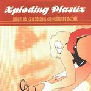

| Artist: | Xploding Plastix |
| Title: | Amateur Girlfriends Go Proskirt Agents |
| Label: | Beatservice Records BSCD038 |
| Length(s): | 59 minutes |
| Year(s) of release: | 2001 |
| Month of review: | [11/2001] |
| 1) | Sports, Not Heavy Crime | 5.07 |
| 2) | Funnybones & Lazylegs | 4.48 |
| 3) | 6-hours Starlight | 3.22 |
| 4) | Behind The Eightball | 4.49 |
| 5) | Single Stroke Ruffs | 2.28 |
| 6) | Treat Me Mean, I Need The Reputation | 4.58 |
| 7) | Relieved Beyond Repair | 1.45 |
| 8) | Tintinnamputation | 4.26 |
| 9) | More Powah To You | 5.26 |
| 10) | Having Smarter Babies | 4.57 |
| 11) | Far-flung Tonic | 4.51 |
| 12) | Happy Jizz Girls | 2.54 |
| 13) | Doubletalk Gets Through To You | 5.23 |
| 14) | Comatose Luck | 3.39 |
Automatic (?) drums figure mostly on the follow-up Funnybones & Lazylegs. One might say that James Bond goes drum 'n' bass here. The triggered drums remind me of Aphex Twin (so one might safely say that they can be quite hectic). The string orchestra gets to quite dissonant towards the end.
Lounge jazz and Latin music we find on the easier going 6-hours Starlight. The sax and bass do make for a sad sounding ending. The percussion does not seem to mind. Behind The Eightball brings us back to James Bond music in a scene where darkness and secrecy yield their tension. It all grooves wonderfully well and hard to sit still by.
Single Stroke Ruffs is soft and intimate with a jazzt sax and a bit introverted. Also a bit on the boring side. Treat Me Mean, I Need The Reputation is definitely better. This is a rousing track with Latin influences and quite a bit of groove and some really nice effects. The acoustic guitar have a Spanish ring to them and the track has some discordant percussion as well.
Vocoded vocals we find on the rather quiet Relieved beyond repair. It is followed by Tintinnamputation which contrasts strongly: hectic percussion, bleepy keys, and a jazz drum. Sweet strings give it its melodic side. More Powah To You is also very percussive and rousing.
Having Smarter Babies is more lightfooted, but featuring fast rhythms nonetheless. The bass nicely zooms throughout the track, the melody is appealing.
Far-Flung Tonic is more orchestral with a sad feel. The music has a certain Tom Waits feel and includes some clarinet playing.
After the Happy Jizz Girls (hmm), we come to the sparse percussion, warm keyboards of Doubletalk Gets Through To You. The closer Comatose luck has film texts and a bass singing low.